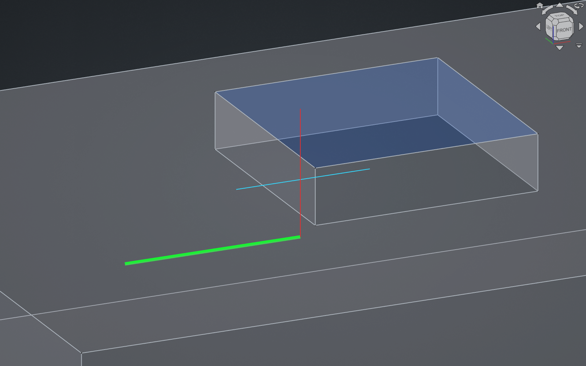
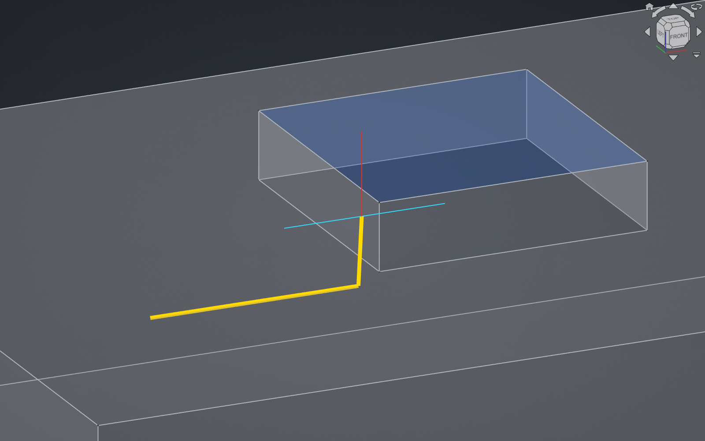
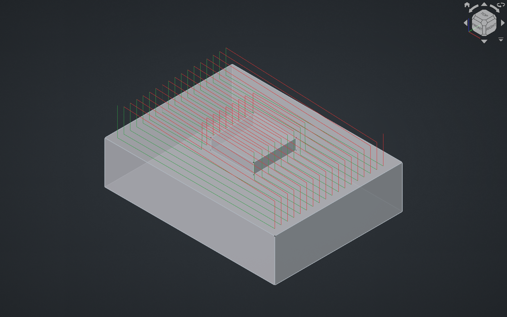
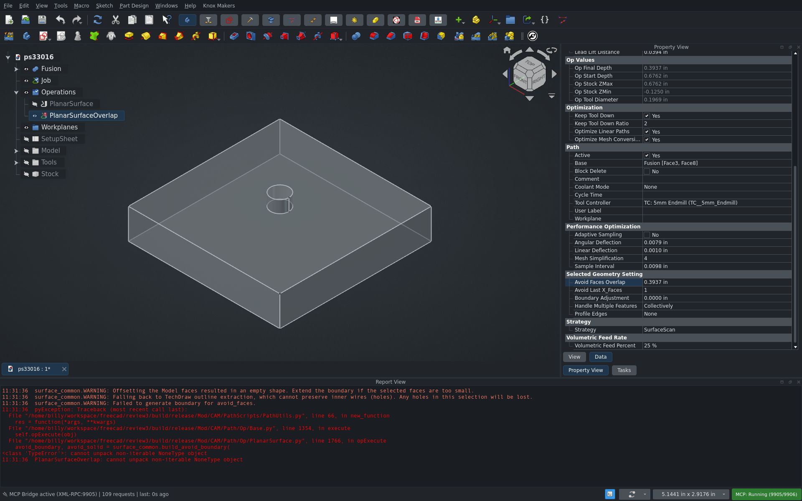
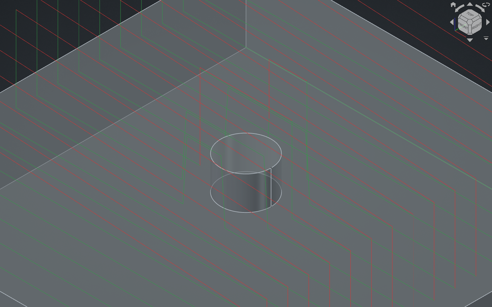
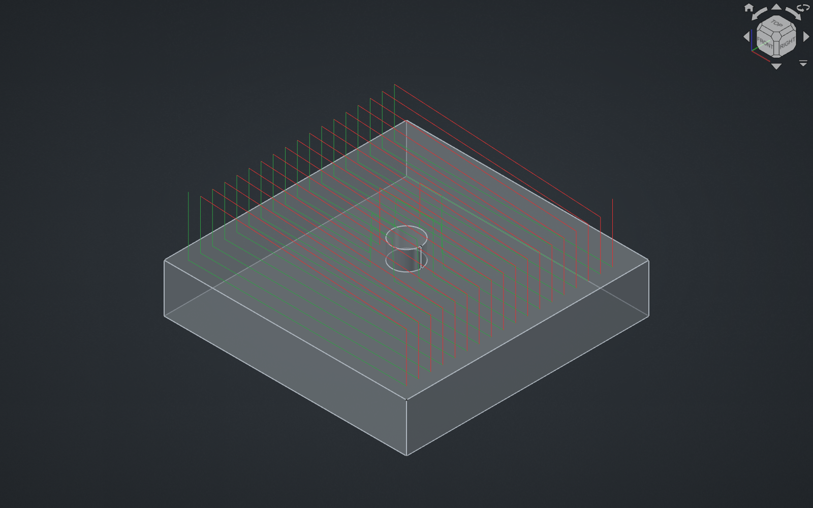

Re-review after the author's new commits (reviewed head was 49d1581). The previous review found that build_avoid_boundary() can return None while PlanarSurface.opExecute() unpacks it, so AvoidFacesOverlap larger than the tool radius gives a TypeError and no path. Check whether that is fixed, the docstring nit, and anything new the added commits introduce.
CAM unit tests with the PR applied: Ran 1828 tests · OK (skipped=13, expected failures=4)



Re-review of head edb6dcf (previously reviewed head was 49d1581).
main and the two new commits (d742bda, edb6dcf) on top of the
previously reviewed head.create_boundary_face, build_optimized_boundary,
build_avoid_boundary, generate_pattern_mask, _shape_to_safe_stl, generate_stl) — all call
sites and both test files are consistent with the new signatures; the dropped tolerance argument
was already dead in the callee bodies.OK (skipped=13, expected failures=4).TypeError scenario.main (same .fcstd, same build, CAM Python swapped per side) on two setups:
a Planar Surface with an avoided island, and a Planar Surface on a pocket floor with vertical walls.The AvoidFacesOverlap crash is fixed. At 49d1581 the success path returned a
(avoid_boundary, avoid_solid) tuple while three early-return branches still returned a bare None,
so opExecute()'s tuple unpack raised TypeError. All three now return None, None. I swept
AvoidFacesOverlap = 0, 1, 2, 2.9, 3, 4, 5 and 10 mm against a 3 mm tool radius and a 20×20 avoided
face: every value recomputes cleanly, including the degenerate ones where
build_avoid_boundary() gives up and returns (None, None) with a warning.
I also checked the new avoid_boundary / avoid_solid split for consistency, and it is sound: with
overlap = 0 the mask hole is face + tool_radius and the safe-STL plate is the face itself, so the
drop-cutter probe adds the radius exactly once instead of the doubled allowance main had. Raising
the overlap shrinks both by the same amount, and the two stay in step.
epsilon buffer puts cutting moves on the avoided faceThe PR deletes the epsilon = max(0.01, tolerance + 0.001) buffer from both
generate_pattern_mask() and build_avoid_boundary(), so the mask edge now sits exactly on the
offset wall. The last sample point of a scan line can then land just outside the clip, and where the
neighbouring geometry rises — i.e. next to an avoided face — the drop cutter lifts to the top of that
face and the op emits a G1 feed move climbing onto the face it was told to avoid.
Setup (default settings otherwise): 80×60×20 block, 20×20×5 pad on top, 6 mm end mill, Base =
block top face + pad top face, Avoid Last X Faces = 1, Avoid Faces Overlap = 0 mm,
LinearDeflection = 0.025 mm.
Scan line at Y = 18, this PR:
G1 F16.670000 X3.003145 Y18.000000 Z20.000000
G1 F16.670000 X27.542663 Y18.000000 Z20.000000
G1 F19.220000 X27.790537 Y18.000000 Z25.000000 <- 5 mm climb onto the avoided pad
G0 F0.000000 Z31.175000
G0 F0.000000 X52.234504 Y18.000000
G1 F5.000000 Z25.000000 <- plunge to pad height
G1 F19.220000 X52.234504 Y18.000000 Z25.000000
G1 F5.010000 X52.482128 Y18.000000 Z20.000000
Same file, same build, on main:
G1 F16.670000 X3.028187 Y18.000000 Z20.000000
G1 F16.670000 X27.758341 Y18.000000 Z20.000000
G0 F0.000000 Z31.175000
Path stats, main vs this PR: feed bounding box max Z 20.0 → 25.0, upward feed moves
0 → 2, feed length 1318 → 1414 mm, cycle time 3:44 → 3:56.
At X = 27.79, Y = 18 the 3 mm-radius cutter is 2.98 mm from the pad corner at (30, 20), so at
Z = 25 it is touching the corner of the avoided face. The offending point is 0.026 mm outside the
mask edge — exactly the epsilon that was removed (max(0.01, 0.025 + 0.001)). This is the
"path spikes on vertical walls" case the old comments described.
The plain pocket-floor A/B showed no spikes — only the expected ±0.026 mm boundary shift (feed bbox X 23.027…56.973 on main vs 23.001…56.999 here), which by itself is a fine cleanup. The problem only shows up where the geometry beside the mask edge is above the cut plane, which is precisely the Avoid Faces case.
Suggestion: keep a small buffer on the avoid-side offset (tool_radius - avoid_overlap + epsilon),
or clip the sampled scan line strictly to the mask so no sample lands outside it.
build_avoid_boundary() docstring: "offest" twice (Outward/Inward offest by…,
avoid_overlap (float): Offest value for boundaries.), and avoid_overlap's description no longer
says what it means (it is the user's Avoid Faces Overlap, in mm).avoid_solid as "Inward offset by avoid_overlap only, representing the
PHYSICAL extent of the avoided faces" — those two clauses contradict each other; it is the physical
extent only when the overlap is 0.surface_mesh.py: the renamed avoid_solid parameter is still documented as
Pre-built Avoid Faces "keep-out" boundary in both _shape_to_safe_stl() and generate_stl(),
which is the old meaning.build_avoid_boundary():
build_optimized_boundary(\n fallback_faces,\n 0.0,\n) on three lines.| file | what it shows |
|---|---|
demo.mp4 |
the repro, step by step |
setup_pr_path.png |
the test setup and this PR's toolpath, plan/iso |
pr_spike.png |
this PR: cutting move climbing to the pad top |
main_no_spike.png |
main: same view, no move above the floor |
CAM unit tests with the PR applied: Ran 1828 tests · OK (skipped=13, expected failures=4)



Reviewed against main in a dedicated worktree with the PR applied and built.
tolerance argument from create_boundary_face, build_optimized_boundary,
generate_pattern_mask and build_avoid_boundary, and with it the
epsilon = max(0.01, tolerance + 0.001) buffer that used to be added to the pattern-mask
offset and to the avoid-zone offset.avoid_boundary (offset by avoid_overlap, used to punch
the hole in the pattern mask) and avoid_solid (offset 0.0, used to build the safe-STL
keep-out pillar). build_avoid_boundary now returns a 2-tuple.avoid_boundary parameter of surface_mesh.generate_stl / _shape_to_safe_stl
to avoid_solid, and updates the two touched unit tests.Ran 1828 tests ... OK (skipped=13, expected failures=4).surface_zlevel.py, PlanarSurface.py, surface_mesh.py, CAMTests/) — the positional
third argument of build_optimized_boundary changed meaning from tolerance to avoids, and
every in-tree call site was updated correctly.main vs PR) on a purpose-built job: 50×50×10 box with a Ø6×4 boss,
Planar Surface / SurfaceScan, Ø5 endmill, base geometry = box top face + boss top face,
AvoidLastX_Faces = 1.build_avoid_boundary() returning None crashes opExecute (regression)surface_common.build_avoid_boundary() still has two return None paths (nothing left to build
from; boundary generation failed), but PlanarSurface.opExecute() now unpacks the result
unconditionally:
avoid_boundary, avoid_solid = surface_common.build_avoid_boundary(avoid_faces, avoid_overlap)
so the operation dies with TypeError: cannot unpack non-iterable NoneType object.
avoid_overlap = tool_radius - obj.AvoidFacesOverlap.Value, and AvoidFacesOverlap is only
clamped at the bottom (< 0 → 0), so any user value larger than the tool radius makes the offset
negative and can collapse a small avoid face to nothing — an ordinary GUI input reaches this.
Repro used (same document on both sides, AvoidFacesOverlap = 10 mm, Ø5 tool, boss radius 3 mm):
main |
PR | |
|---|---|---|
| op state | Up-to-date | Touched, Invalid |
| path commands | 113 | 0 |
| report log | surface_common.WARNING: Failed to generate boundary for avoid_faces. |
same warning, then TypeError: cannot unpack non-iterable NoneType object |
main degrades gracefully (avoid_boundary = None, operation still generates a path); the PR
produces no toolpath at all.
build_avoid_boundary() docstring no longer matches the codeReturns: Part.Shape: The offset avoid-zone boundary, or None ... — it now returns
(avoid_boundary, avoid_solid).With AvoidFacesOverlap = 0 the same job still generates on both sides and
cam_gouge_check reports no gouges for the PR path. The epsilon removal does change the
result measurably:
main 5.5054 mm (+0.0054 clearance), PR 5.4999 mm (−0.00012). The path is now exactly
tangent to the avoid geometry instead of standing off by the old epsilon. 0.12 µm is inside any
machining tolerance, so this is noted rather than reported, but it is the margin the removed
buffer used to provide.No .ui files are touched, so there is no panel change to GUI-check.